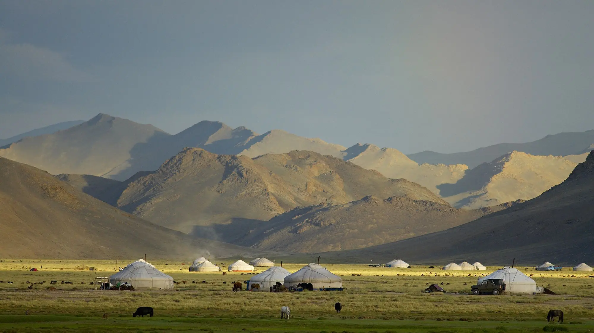
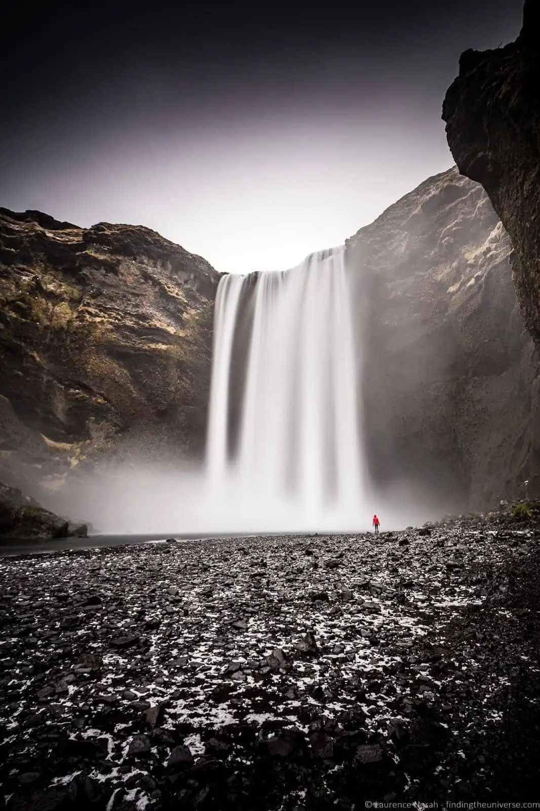
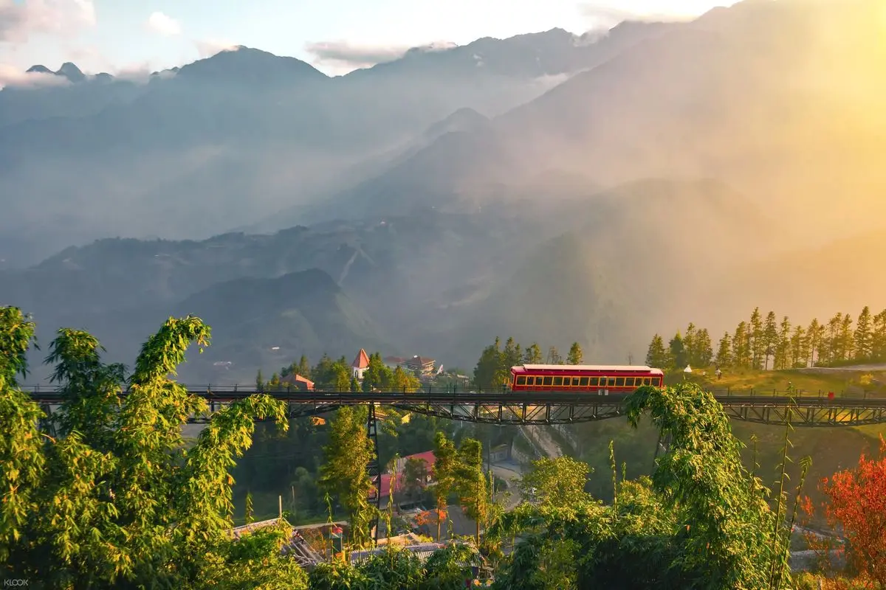
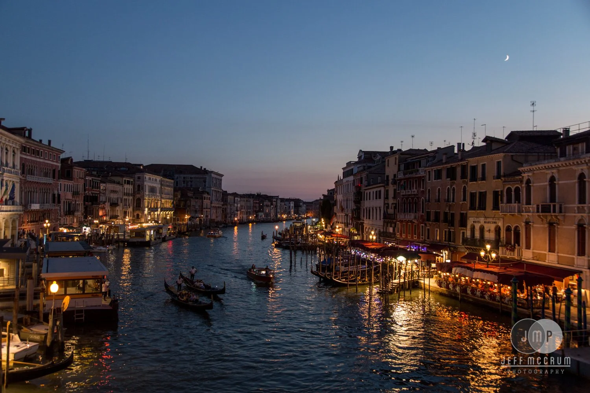
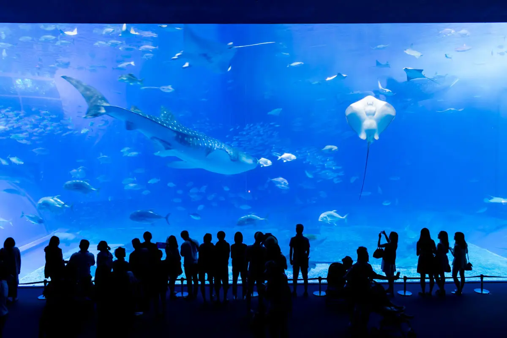
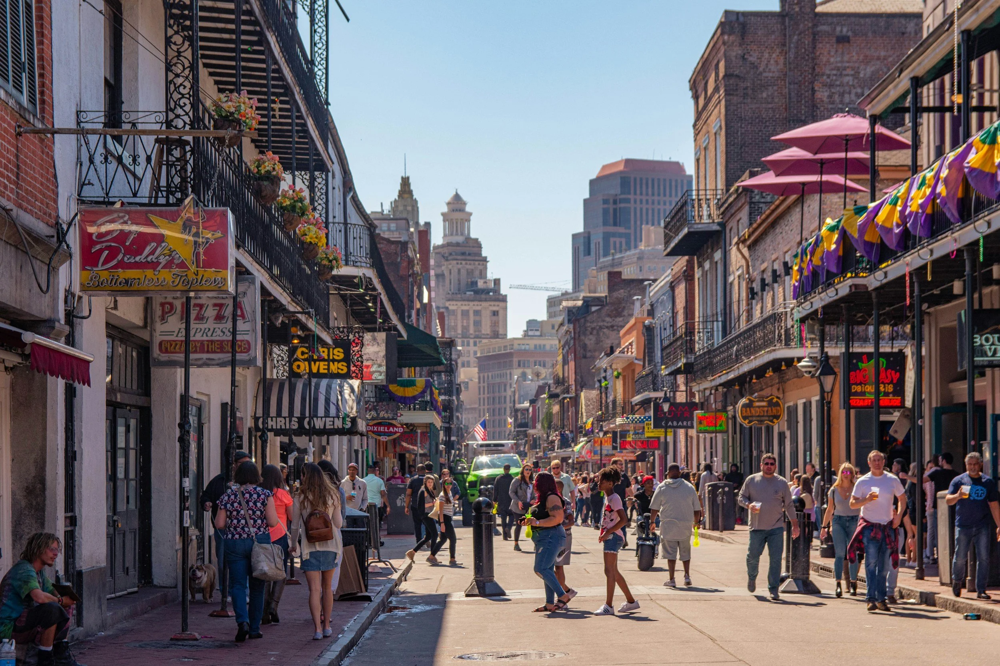
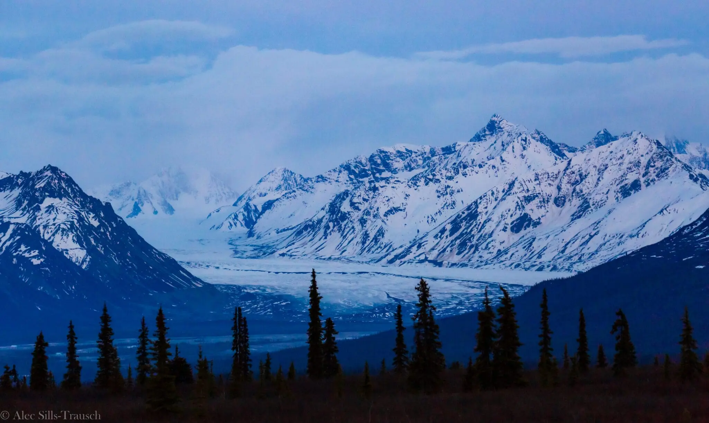
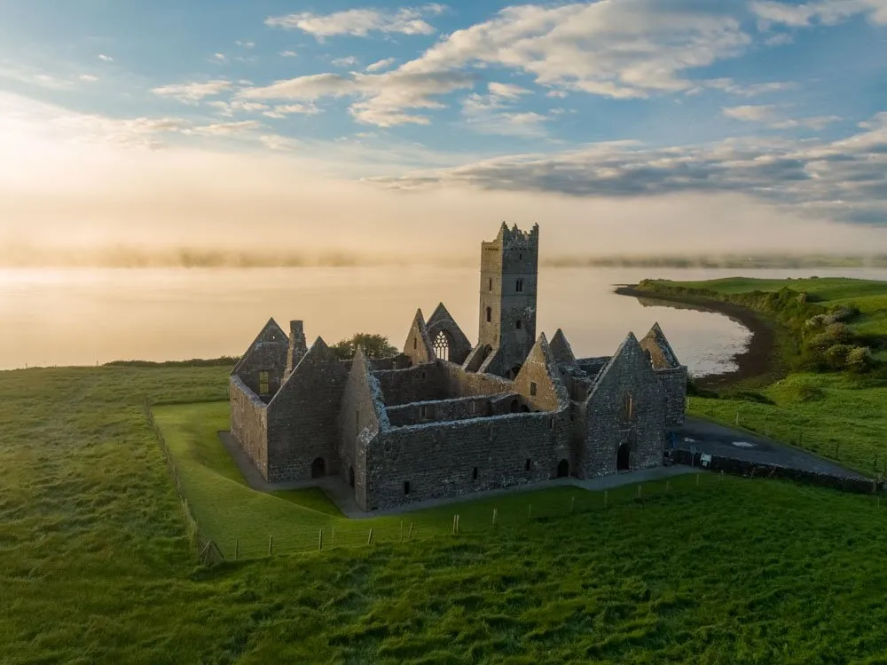

One-stop travel guide · Since 2026
Discover must-see destinations around the world
Weekly travel guides, photo galleries, tourist itineraries. For the dream travelers and beyond.

Travel Destinations Gallery
Every photo here is credited to their rightful sources.







